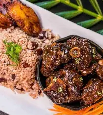

Jamaican Oxtail with Rice and Peas
Oxtail is slowly cooked until tender in a rich, flavorful gravy. It is traditionally enjoyed with Jamaican rice and peas.
Common ingredients: oxtail, beans, rice, thyme, scallion, garlic, onion, peppers, and seasonings.